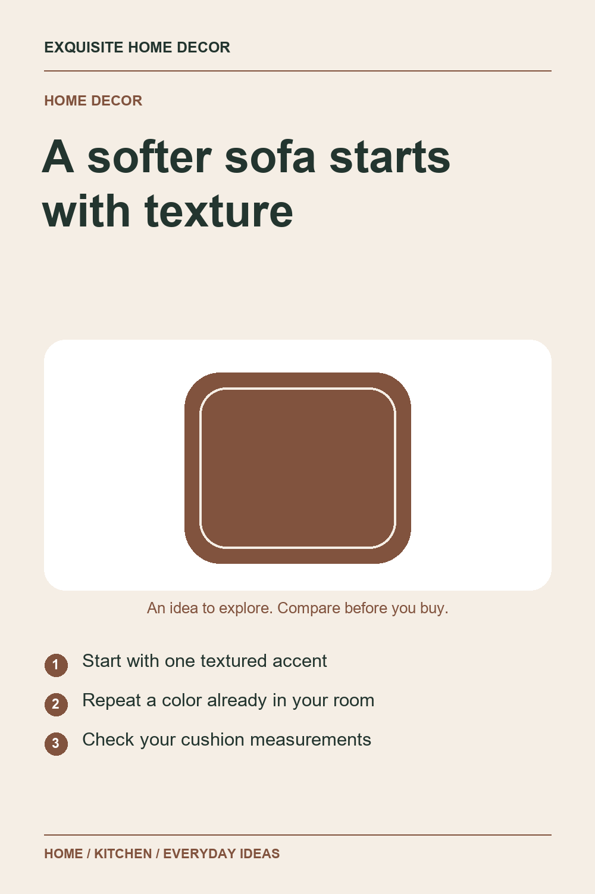
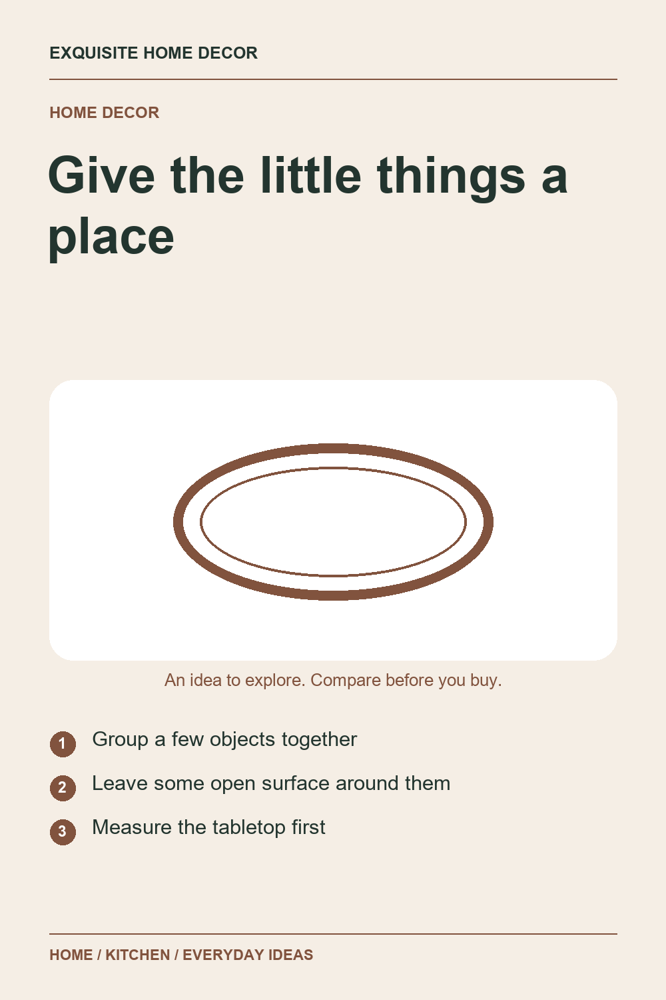
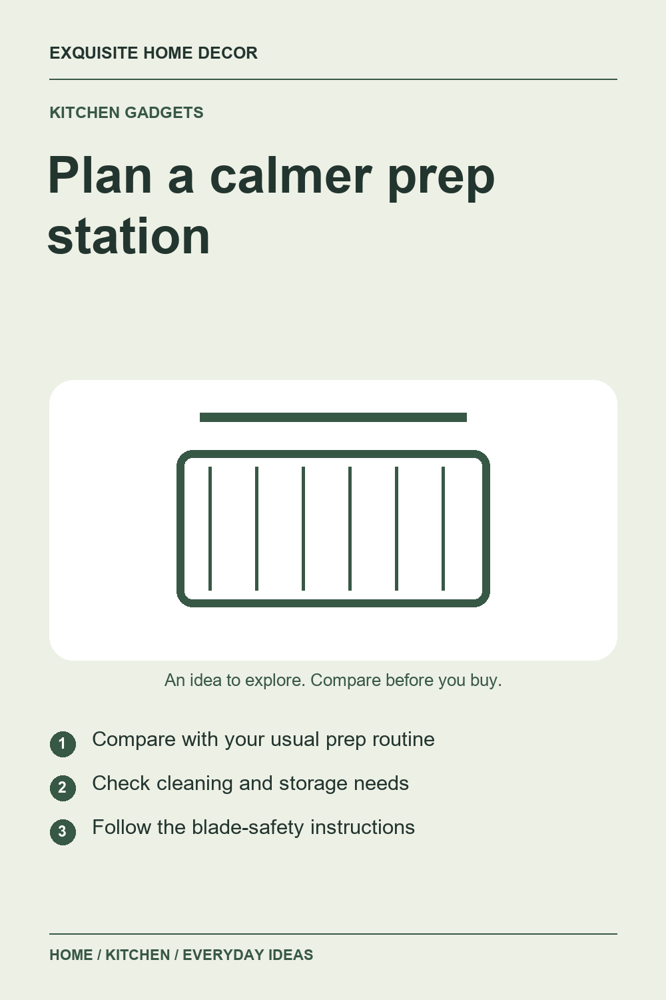
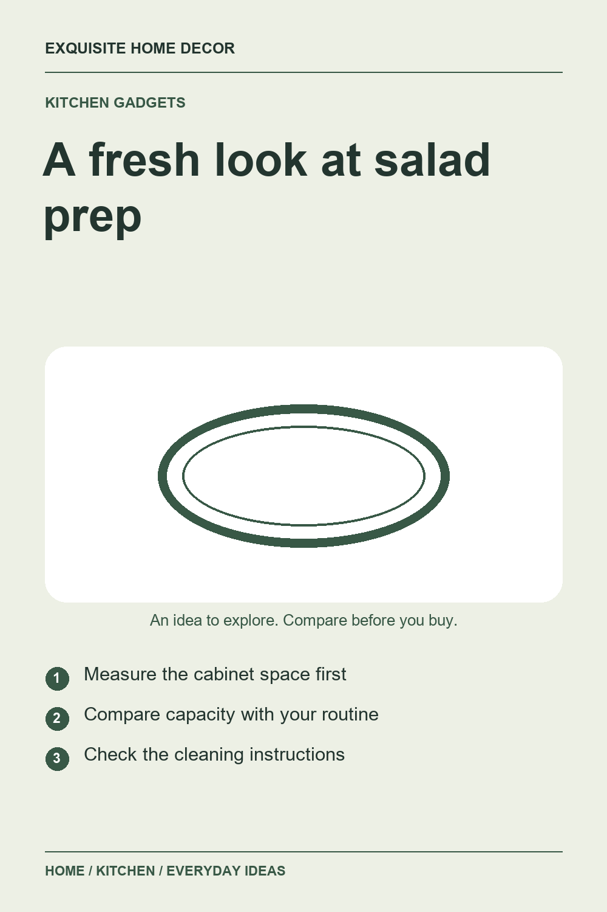
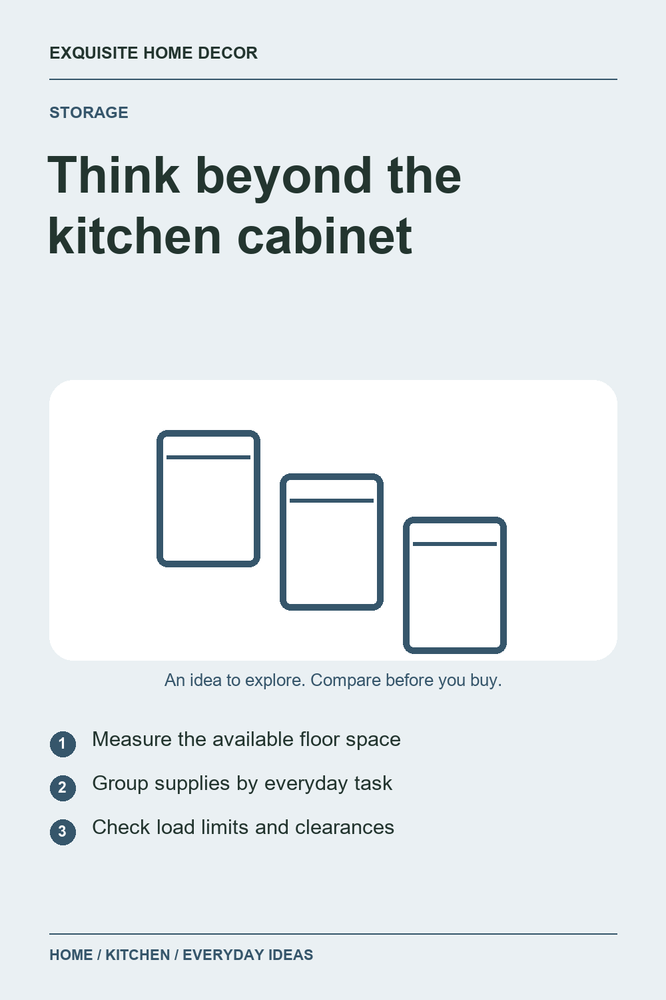
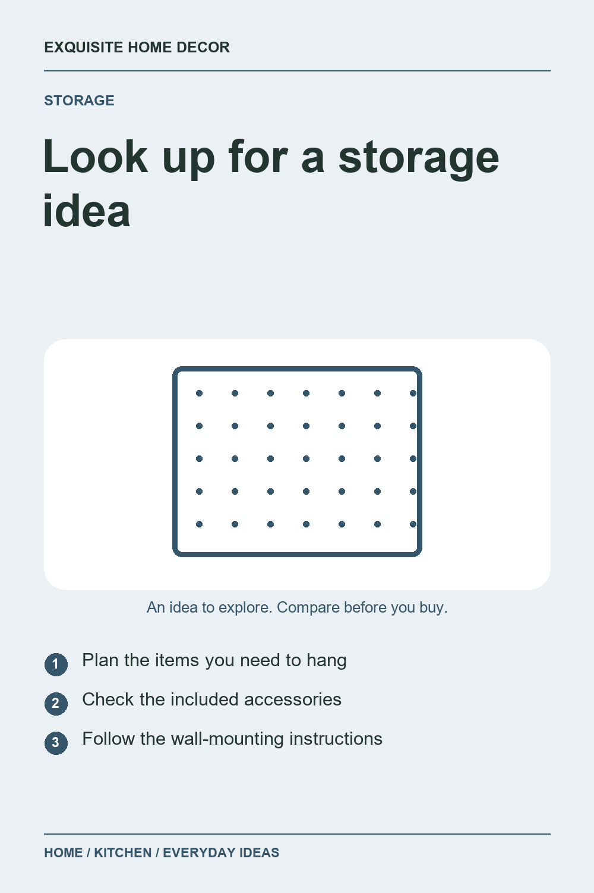
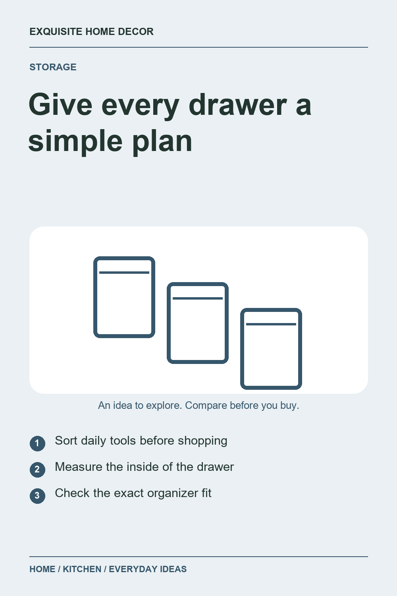

Home decor
A textured cushion cover idea for a softer-looking sofa
JUSPURBET yellow chenille pillow covers, 26 × 26 inches, set of 2
Exquisite Home Decor
Ten ideas for making your space feel more considered, with product details to compare before you buy.

Home decor
JUSPURBET yellow chenille pillow covers, 26 × 26 inches, set of 2

Home decor
Kate and Laurel Myo round brass-color metal tray, 15 × 15 inches

Home decor
Nearly Natural artificial pothos with white planter, 9 inches

Kitchen gadgets
OXO Good Grips Vegetable and Onion Chopper with Easy Pour Opening

Kitchen gadgets
OXO Good Grips 3-in-1 Avocado Slicer, green

Kitchen gadgets
OXO Good Grips 6.22-quart Salad Spinner, white, large

Storage
Amazon Basics 3-tier rolling utility cart, charcoal

Storage
Wall Control 4-foot metal pegboard kit, black panels and accessories

Storage
OXO Good Grips POP Container, 4.4 quarts

Storage
OXO Good Grips expandable utensil organizer